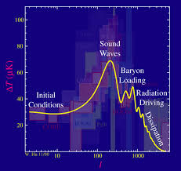

La inflacion cosmica es una fase hipotetica de expansion exponencial extremadamente rapida que habria ocurrido en los primeros instantes del universo, aproximadamente entre 10^-36 y 10^-32 segundos tras el Big Bang. Fue propuesta para resolver inconsistencias del modelo cosmologico clasico.
La homogeneidad observada en regiones del universo que no estuvieron en contacto causal requiere un mecanismo que iguale sus condiciones fisicas iniciales. La inflacion permite que regiones actualmente separadas estuvieran originalmente en contacto.
Las observaciones indican que el universo es geometricamente casi plano. La inflacion diluye cualquier curvatura inicial, conduciendo naturalmente a un universo plano.
La inflacion se modela mediante un campo escalar hipotetico denominado inflaton. La energia potencial asociada a este campo domina la dinamica del universo durante el periodo inflacionario.
Las fluctuaciones cuanticas del campo inflaton se amplificaron durante la inflacion, generando las semillas primordiales que posteriormente dieron origen a la estructura a gran escala: galaxias y cumulos.
Las anisotropias medidas en la radiacion cosmica de fondo concuerdan con las predicciones inflacionarias, aunque la deteccion directa de ondas gravitacionales primordiales aun esta pendiente.